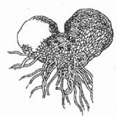
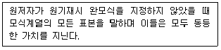
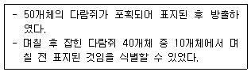

생물분류기사(동물) (2006-09-10 기출문제)
1과목: 계통분류학
1. 다음 중 동물분류에 사용되는 중요한 분류학적 형질과 가장 거리가 먼 것은?
- 구애행위 및 행동적 격리기구
- 서식지, 숙주
- 사후 변화(postmortem change)의 양상
- 동소적-이소족 분포 관계
(정답률: 88%)

2. 다음 중 곤충강이 가지는 형질이 아닌 것은?
- 키틴으로 된 외골격을 가진다.
- 좌우대칭이고 체절적 구조를 가진다.
- 배설기는 불꽃세포로 구성된다.
- 성체에서 체강은 퇴화하고 혈액으로 충만한 혈강을 가진다.
(정답률: 90%)
3. 다음 검색표에 관한 설명 중 옳지 않은 것은?
- 일차적 기능은 종의 정확한 동정이다.
- 반드시 계통적 유연관계가 반영되어야 한다.
- 각 단계에서 제시되는 형질 상태는 명확히 구분 가능한 것이어야 한다.
- 계절에 따라 변하는 형질은 사용하지 않는다.
(정답률: 63%)
4. 다음 중 환형동물의 다모강 특징에 해당하는 것은?
- 암수 한 몸으로 환대가 있다.
- 촉각에 강모 다발이 있다.
- 전구엽에는 촉수와 안정이 없다.
- 직접 발생하며 유생이 없다.
(정답률: 64%)
5. 수리분류학에서 사용되는 운영분류단위는?
- Taxon
- Unit
- ANC
- OTU
(정답률: 72%)
6. 다음 종분화에 관한 설명 중 옳지 않는 것은?
- 이지역성 종분화(allopatric speciation)에는 지리적 격리가 중요한 역할을 한다.
- 식물의 동지역성 종분화(sympatric speciation)에는 염색체 배수화 현상이 중요한 역할을 한다.
- 종의 실체가 유지되기 위해서는 생식적 격리기작의 발달이 필요하다.
- 잡종형성에 의해서는 종분화가 일어날 수 없다.
(정답률: 90%)
7. 다음 식물 중 자웅이주가 아닌 것은?
- 은행나무
- 버드나무
- 매자나무
- 매마등
(정답률: 58%)
8. 다음의 관속식물 속(genus) 중에서 한반도에 분포하는 종수가 가장 많은 것은?
- 마디풀속(Polygonum)
- 참나무속(Quercus)
- 사초속(Carex)
- 벚나무속(Prunus)
(정답률: 79%)
9. 진드기목(응애목)은 절지동물문의 어느 강에 해당하는가?
- 거미강
- 배각강
- 갑각강
- 곤충강
(정답률: 79%)
10. 동물이명(synonym) 관계는 다음 중 어느 경우를 지칭하는가?
- 돌 또는 그 이상의 서로 다른 분류군에 하나의 학명이 사용되는 경우
- 한 분류군에 2개 이상의 학명이 서로 다르게 사용되는 경우
- 한 종이 2개 이상의 아종으로 분류도어 사용되는 경우
- 성적이형이나 생태적 변이를 보이는 경우의 명칭이 사용되는 경우
(정답률: 54%)
11. 다음은 어떤 식물이며 생활사에서 어느 세대에 속하는가?

- 나자식물의 배우체
- 나자식물의 포자체
- 양치식물의 배우체
- 양치식물의 포자체
(정답률: 72%)
12. 다음에서 설명하는 표본은 무엇인가?

- 부모식(paratype)
- 총모식(syntype)
- 후모식(lectotype)
- 신모식(neotype)
(정답률: 95%)
13. 암술과 수술이 유합된 특징인 예주를 보이는 식물과는?
- 난과
- 벼과
- 사초과
- 백합과
(정답률: 67%)
14. 다음 중 각 학자들의 이론에 대한 설명이 잘못 연결된 것은?
- 에이머(Eimer)의 정향진화설(orthorenesis theory) : 생물은 내재적인 힘에 의하여 환경의 영향과는 관계없이 일정한 방향으로 진화한다.
- 다윈(Darwin)의 자연선택설(natural selection theory) : 생물들은 생육 장소나 환경의 영향을 받아 사용 정도에 따라 기본적인 체형에 변화를 받게 되어 자연 속에서 살아 남는다.
- 드브리스(Ee Vries)의 돌연변이설(mutation theory) : 돌연변이가 진화의 원인이 된다.
- 헤켈(Haekel)의 반복설(recapitulation theory) : 생물의 계통발생은 개체발생 도중에 반복된다.
(정답률: 67%)
15. 상동과 상사에 대한 설명 중 틀린 것은?
- 상동은 분류학에서 계통발생적 기원이 동일한 기관간의 관계를 말한다.
- 어류와 파충류의 비늘은 상동의 대표적인 예이다.
- 상사는 외관이나 기능은 비슷하나 발생기원이 다른 기관을 말한다.
- 새와 나비의 날개는 상사의 대표적인 예이다.
(정답률: 75%)
16. 식물의 분류체계는 학자에 따라 다르다. 그 중에서 가능한 모든 분류학적 증거를 이용하여 친소성을 체계에 반영시켰고, 피자식물을 단게원으로 하여 목련목을 원시형군으로 두고 이 노선에서 다른 여러 파자식물군들이 진화한 것으로 본 분류체계는?
- Takhtajan
- Cronquist
- Thorne
- Dahlgren
(정답률: 78%)
17. 다음 중 학명(종서명)의 원저자를 알 수 있는 것은?
- Cancer pagurus sensu Latreille
- Forsythia Koreana(Rehder)
- Hymenolepsis diminuta, De Man
- Pagurus trigonocheirus : Rathbun
(정답률: 64%)
18. 다음 중 식물명명 규약의 원칙으로 잘못된 것은?
- 각 분류군은 정명 단 하나 뿐이다.
- 특별한 제한이 없는 한 소급력이 있다.
- 학명은 영어로 한다.
- 명명의 적용은 명명기준(type)에 따라서 결정한다.
(정답률: 65%)
19. 연골어류의 가장 중요한 특징은?
- 체외수정을 한다.
- 아가미 뚜껑이 있다.
- 순린의 비늘로 덮혀 있다.
- 꼬리지느러미는 정형이다.
(정답률: 65%)
20. 다음 중에서 시과를 갖고 있지 않는 식물은?
- 물푸레나무
- 소귀나무
- 단풍나무
- 느릅나무
(정답률: 79%)
2과목: 환경생태학
21. 폐쇄군집(closed community)과 가장 거리가 먼 것은?
- 작은 섬
- 동굴
- 열수구
- 삼림
(정답률: 95%)
22. DDT와 같은 유해물질이 하위 영양단계에 있는 생물보다 상위 영양단계에 있는 생물의 체내에 더 많이 축적되는 현상을 무엇이라 하는가?
- 영양단계농축
- 생물농축
- 먹이사슬
- 에너지농축
(정답률: 100%)
23. 호소 및 하천주변의 식생대에 있어서 침수식물에 해당하는 것은?
- 개구리밥
- 검정말
- 택사
- 부들
(정답률: 84%)
24. 온대림 생물군계에 대한 설명으로 옳지 않은 것은?
- 지구육상생태계 중 생물량의 34%를 차지하는 군계로 생태계 생산량이 가장 높다.
- 동북아시아, 북미, 중부 유럽, 동남 호주지역, 일부 아프리카 지역 등이 포함된다.
- 삼림파괴와 토지이용이 집약적으로 이루어져 인간간섭에 의해 가장 많이 변형된 생물군계 지역이다.
- 원시상태의 자연림은 국립공원과 같은 보호지역 내에서 제한적인 면적으로 잔존하고 있다.
(정답률: 86%)
25. 생태계에서 먹이 연쇄는 생산자 → 1차 소비자 → 2차 소비자 → 최종 소비자로 이어진다. 이러한 먹이 전달 과정의 각 단계가 높아짐에 따라 일반적으로 생물체에 나타나는 경향에 대한 설명으로 맞는 것은?
- 몸집이 커지나 개체수는 줄어든다.
- 몸집이 커지고 개체수는 늘어든다.
- 몸집이 작아지고 개체수는 줄어든다.
- 몸집이 작아지나 개체수는 늘어든다.
(정답률: 100%)
26. 다음 중 기생식물이 아닌 것은?
- 겨우살이
- 개종용
- 실새삼
- 환상덩굴
(정답률: 94%)
27. 1910년 일본에서 발생한 이타이이타이 사건에 관련된 중금속은?
- 수은
- 구리
- 아연
- 카드뮴
(정답률: 95%)
28. 물의 순환에 관한 설명이다. 틀린 것은?
- 해양, 육상과 대기 간의 물의 이동현상을 말한다.
- 순환경로의 기본은 비의 형태로 떨어지는 강수현상과 증발산이다.
- 토양의 일부에 흡수된 물의 일부는 아래로 이동하여 지하수에 이르는데 이를 흡습수라 한다
- 지하수위는 그 지역의 지형을 반영하는데, 지하수위보다 지형이 낮은 곳에서 개울 및 호소가 형성된다.
(정답률: 69%)
29. 독특한 기후 조건에 의해 형성된 지질학적 지역 내에서의 식물과 동물의 특수한 배열을 무엇이라 하는가?
- 생물군계(biome)
- 경관(landscape)
- 생태계(ecosystem)
- 군집(community)
(정답률: 65%)
30. 개체군이 J형(지수생장곡선)으로 성장 할 때의 환경조건으로 옳지 않은 것은?
- 최대 번식률
- 다양한 환경적 제약조건
- 충분한 먹이 자원
- 다른 생물종에 의한 무 영향
(정답률: 90%)
31. 생태계의 천이에 대한 설명이다. 틀린 것은?
- 대부분의 천이는 군집에 의한 물리적인 환경의 변화와 개체군간의 경쟁·공존의 상호작용의 결과로 발생한다.
- 외부의 힘을 받지 않을 경우, 상당한 방향성을 가지므로 예측이 불가능하다.
- 천이의 결과 군집이 최종적으로 안정한 상태에 이르렀을 때를 극상(climax)이라 한다.
- 천이가 새로운 기질 위에서 형성될 때에는 1차전이 (primary succession)라고 부른다.
(정답률: 75%)
32. 문화적 부영양화(cultural eutrophication)란 무엇인가?
- 박테리아에 의한 질소의 감소
- 산소가 없는 상태에서의 물질대사
- 산소가 존재하는 상태에서의 물질대사
- 인간에 의하여 생기는 무기염 유출증가 형태
(정답률: 95%)
33. 지리산에 서식하고 있는 다람쥐의 개체수를 조사하고자 포획-재포획의 방법을 이용하였다. 다음과 같은 조사 결과를 얻었을 때 다람쥐의 총 개체군 크기는 얼마인가?

- 40
- 50
- 100
- 200
(정답률: 65%)
34. 대부분의 생물이 쉽게 얻을 수 없는 질소 공급원은?
- 대기 속의 질소
- 질산염
- 아미노산
- 단백질
(정답률: 89%)
35. 온실효과의 원인이 되는 대표적인 온실가스에 해당하지 않는 것은?
- 이산화황
- 이산화탄소
- 메탄
- 염화불화탄소(CFC)
(정답률: 94%)
36. 개체군의 밀도를 측정하려면 먼저 개체군을 형성하는 개체수를 파악하여야 한다. 개체군의 밀도를 측정하는 방법이 아닌 것은?
- 전수조사(total count)
- 조밀도법(crude density)
- 방형구법(quadrat sampling)
- 비구획법(poltless)
(정답률: 79%)
37. 포식은 군집구조를 결정하는 중요한 요인이다. 포식자가 피식자의 수에 영향을 미치나 보통은 피식자 개체군을 절멸시키지 않는 상호관계는 다음 중 무엇에 의해 잘 설명되는가?
- 종간 경쟁설(interspecific competition theory)
- 멘델의 법칙(Mendel theory)
- 로트카-볼테라설(Lotka-Volterra theory)
- 수용능력의 법칙(principle of carrying capacity)
(정답률: 69%)
38. 습지 보존을 위한 국제협약으로 1971년 체결되었으며, 더 이상의 습지 손실을 막고, 지속 가능한 습지가 될 수 있도록 국제적 협력을 목적으로 하는 협약은?
- 종 다양성에 관한 국제협약
- 빈협약
- 람사협약
- 이동동물 국제협약
(정답률: 100%)
39. 다음은 개체군 조절 매커니즘에 대한 설명이다. 옳지 않은 것은?
- 개체군의 출생률과 사망률의 변화가 밀도에 영향을 받지 않는 것을 밀도-비의존효과(density-independent effect)라고 한다.
- 무생물적 조절은 보통 밀도-비의존적(density-independent)인 반면에 생물적 조절은 밀도-의존적(density-independent)이다.
- 제한된 환경에서 환경수용능력 이상의 개체군은 밀도가 감소한다.
- 생태계 내에서 개체군의 밀도가 증가하면 자신에게 가해지는 압력이 감소한다.
(정답률: 89%)
40. 특정 생태계 내의 총생산량(P)과 호흡량 (R)과의 비를 구하면 생태계의 안정성 유무를 판단할 수 있는데, (P/R)>1인 경우의 생태계에 대한 설명으로 옳은 것은?
- 생산성은 크나, 불안정한 생태계이다.
- 소비적이며 불안정한 생태계이다.
- 생산성은 크며 안정한 생태계이다.
- 소비적이나 안정한 생태계이다.
(정답률: 87%)
3과목: 형태학
41. 피자식물의 열매를 크게 진과와 가과로 나누는 기준은 무엇인가?
- 과피의 기원에 따른 것이다.
- 종자의 기원에 따른 것이다.
- 육질의 과다에 따른 것이다.
- 견고도에 따른 것이다.
(정답률: 75%)
42. 존스톤 기관(Johnston organ)은 곤충류에서 발견되어 이름 지어진 기관이다. 다음 중 어떤 기관에 속하는가?
- 소화기관
- 발음기관
- 신경기관
- 청각기관
(정답률: 89%)
43. 건생식물의 잎에 대한 설명 중 옳지 않은 것은?
- 증산을 감소시키기 위해 잎의 크기는 작아진다.
- 표면의 각피층과 납질층이 비후되는 경향이 있다.
- 모용과 다육성 저수조직이 발달하는 것이 일반적인 경향이다.
- 공변세포는 주변 표피세포보다 돌출되는 것이 일반적인 경향이다.
(정답률: 85%)
44. 배 과육의 껄끄럽고 단단한 돌세포는 무엇인가?
- 후벽세포(sclereid)
- 섬유(fiber)
- 유조직(parenchyma)
- 큐티클(cuticle)
(정답률: 95%)
45. 심피의 작용을 위한 필수적인 기관이 아닌 것은?
- 자방
- 화주
- 주두
- 배주
(정답률: 57%)
46. 다음 중 결합조직(connective tissue)이 아닌 것은?
- 연골(cartilage)
- 뼈(bone)
- 표피(epidermis)
- 혈액(blood)
(정답률: 75%)
47. 무리(flock)에 대한 설명으로 잘못된 것은?
- 혼자서 잡을 수 없는 먹이도 여러 개체가 함께 공격하면 잡기 쉬워진다.
- 개체당 경계량이 많아지고, 포식자에게 잡혀 먹힐 확률이 높아진다.
- 온혈동물은 추울 때 함께 붙어 있으면 에너지가 절약된다.
- 기생충이나 전염병이 옮기 쉽다.
(정답률: 94%)
48. 다음 중 평활근(smooth mucle)이 발견되지 않는 곳은?
- 내장
- 혈관벽
- 이두근
- 홍채
(정답률: 84%)
49. 일정한 기능을 가진 세포가 집단을 이루고 있는 것을 조직(Tissue)이라고 하며 동물조직의 종류는 4가지 기본조직(Primary Basic Tissue)으로 이루어져 있다. 동물의 기본 조직 4가지가 아닌 것은?
- 상피조직(Epithelial Tissue)
- 지지조직(Supporting Tissue)
- 근육조직(Muscular Tissue)
- 신경조직(Nervous Tissue)
(정답률: 94%)
50. 다음 나열된 기공복합체(stomatal complex)의 유형 중 부세포와 표피세포가 구별이 되지 않는 것은?
- 방사형(actinocytic type)
- 불균등형(anisocytic type)
- 불규칙형(anomocytic type)
- 평행형(paracytic type)
(정답률: 32%)
51. 성체 멍게의 구멍은 몇 개인가?
- 1
- 2
- 3
- 4
(정답률: 73%)
52. 다음 중 복엽 또는 그 일부에 해당되지 않은 것은?
- 우상복엽
- 장상복엽
- 소엽
- 단엽
(정답률: 79%)
53. 물관부 조직에 관한 설명 중 틀린 것은?
- 피자식물은 주로 도관(물관)으로 물을 수송한다.
- 나자식물은 가도관(헛물관)으로 물을 수송한다.
- 도관절(물관세포)과 가도관(헛물관)의 양쪽 끝벽에는 구멍(천공)이 뚫려 있다.
- 도관절(물관세포)과 가도관(헛물관)의 측벽에는 2차벽 물질이 다양한 무늬로 두껍게 쌓여 있다.
(정답률: 63%)
54. 다음 중 엽상체가 아닌 식물은?
- 조류
- 균류
- 선태식물
- 유관속식물
(정답률: 74%)
55. 자포동물의 몸 구조를 바깥쪽에서 안쪽으로 보았을 때 순서대로 나열한 것은?
- 외배엽, 중교, 내배엽
- 외배엽, 내배엽, 중교
- 중교, 내배엽, 외배엽
- 중교, 외배엽, 내배엽
(정답률: 90%)
56. 절지동물(Arthropoda)의 형태적 특징을 설명한 것 중 틀린 것은?
- 몸은 좌우대칭, 체절적 구조이다.
- 키틴이나 탄산칼슘으로 된 외골격을 가진다.
- 혈관계는 폐쇄혈관계이다.
- 체절마다 관절이 있는 부속지를 가진다.
(정답률: 77%)
57. 호르몬에 대한 설명으로 잘못된 것은?
- 티록신은 다양한 동물 중에서 발견되며 올챙이가 성체로 변태할 때 필요하다.
- 히스타민은 번식을 위해 해수와 담수를 오가는 어류에서 삼투평형을 유지하게 한다.
- 에피네프린은 위험한 상황에서 벗어나기 위한 기회를 증가시키는데 기여한다.
- 유충호르몬은 유충의 탈피, 용화(번데기), 성체가 되는 것을 조절한다.
(정답률: 69%)
58. 몸 전체에 많은 구멍이 퍼져 있어 일반적으로 스폰지(sponge)라고 불리는 이 동물은?
- 중생동물
- 해면동물
- 편형동물
- 유형동물
(정답률: 89%)
59. 피자식물의 경우 정세포에 의해 수정이 될 때 다음의 어떤 세포가 각각 배젖과 접합자를 만드는가?
- 배젖 : 난세포, 접합자 : 중심세포
- 배젖 : 중심세포, 접합자 : 난세포
- 배젖 : 화분관세포, 접합자 : 중심세포
- 배젖 : 중심세포, 접합자 : 화분관세포
(정답률: 62%)
60. 피자식물의 중복수정 과정에 포함된 핵의 종류와 개수를 바르게 나열한 것은?
- 두 개의 정핵, 한 개의 난핵, 두 개의 극핵
- 한 개의 정핵, 한 개의 난핵, 한 개의 극핵
- 두 개의 정핵, 두 개의 난핵, 두 개의 극핵
- 한 개의 정핵, 두 개의 난핵, 한 개의 극핵
(정답률: 74%)
4과목: 보존 및 자원생물학
61. IUCN 이 보존의 대상종으로 구분한 범주에 속하지 않는 것은?
- 절멸종(Extinct)
- 위험종(Endangered)
- 다양종(various)
- 취약종(Vulnerable)
(정답률: 86%)
62. 공공 수족관에 종사하는 전문가의 역할에 속하지 않은 것은?
- 희귀종을 수족관에서 유지시키기 위한 증식 기술개발
- 야생개체의 포획방지를 위해 증식된 개체 방사
- 고래 종류 등의 보존 역할 수행
- 근친교배를 통한 순수혈통 강화
(정답률: 95%)
63. 다음 중 보전생물학의 주된 목적으로 보기 어려운 것은?
- 군집 및 생태계에 대한 인간의 활동을 명확히 이해하는 것이다.
- 종의 절멸을 막기 위한 실질적인 보전방법을 발전시키는 것이다.
- 절멸의 위험에 처해 있는 종들이 다시 생태계에서 기능을 발휘할 수 있도록 재건하는 것이다.
- 생태계의 구조와 기능만 이해하는 것이다.
(정답률: 79%)
64. 서식지 단편화로 나타나는 주된 현상은?
- 개체군 크기 증가
- 서식지 단위 면적 당 가장 자리의 면적이 증가
- 이동 범위의 확대
- 종의 영속성 강화
(정답률: 79%)
65. 다음 중 멸종되기 쉬운 종의 특징과 가장 거리가 먼 것은?
- 지리적인 분포범위가 좁은 종
- 계절적 이주 종
- 유전적 변이가 높은 종
- 특이한 생태적 지위를 요구하는 종
(정답률: 95%)
66. 생물 다양성에 관한 협약서상 생물자원에 대한 설명으로 적절하지 않은 것은?
- 지구상의 모든 생물을 포함한다.
- 실질적 혹은 잠재적으로 사용되거나 가치가 있는 유전자원, 생물체 등을 의미한다.
- 생태계의 구성요소이다.
- 코끼리떼, 옥수수밭, 유전자는 생물자원에 포함된다.
(정답률: 67%)
67. 거의 동일한 환경자원을 이용하는 같은 영양단계에 있는 종들을 의미하는 일반적인 용어는?
- 길드(guild)
- 분해자(decomposers)
- 숙주(host)
- 중추종(keystone species)
(정답률: 91%)
68. 생물다양성의 장기적 보전을 위한 전략 중 현지 외(ex-situ) 보전방법에 해당되지 않는 것은?
- 동물원
- 수목원
- 종자은행
- 야생방사
(정답률: 94%)
69. 쿄토의정서에 대한 설명으로 옳은 것은?
- 지구 온난화 방지를 위한 국제 협약으로 온실가스 배출량의 제한에 관한 협약
- 지구 사막화 방지를 위한 국제 협약으로 초식동물수의 제한에 관한 협약
- 산업화로 인한 폐기물 양이 급격히 증가하는 바, 그 절대량의 제한에 관한 국제 협약
- 생물 유전자의 과잉 개발 억제에 관한 국제 협약
(정답률: 93%)
70. 환경오염의 영향에 대한 설명 중 틀린 것은?
- 환경오염의 주요 원인에는 공장이나 자동차로부터의 배출가스, 공장이나 인간거주지로부터 방출되는 살충제, 화학물질, 하수나 토양유출에 의한 퇴적물 등이 있다.
- 환경오염은 생물 다양성에 위기를 초래할 뿐만 아니라 인간의 건강에도 영향을 미친다.
- 조류에 있어서는 DDT와 그 부산물이 체내에 축적되어 알껍데기가 매우 얇아져 그 결과 알이 깨지는 현상이 일어나는 경우가 발생된다.
- 인위적 부영양화로 특정 플랑크톤이 이상 감소를 일으켜 바닷물이 변색하는 현상을 녹조현상이라고 부른다.
(정답률: 84%)
71. 자연계에서 볼 수 있는 개체군 내 개체분포(intraspecific dispersion)의 기본형이 아닌 것은?
- 균일형
- 선형
- 불규칙형
- 집중형
(정답률: 78%)
72. 메타개체군이란 무엇을 말하는가?
- 비교적 안정된 개체수를 지닌 개체군
- 이주와 관련된 일시적이고 유동적인 개체군들의 체계
- 핵심 개체군의 주변에 존재하는 개체군
- 모든 개체군의 총합
(정답률: 85%)
73. 생물 다양성은 크게 3가지 수준에서 고려할 수 있다. 다음 중 3가지 수준에 속하지 않는 것은?
- 종 다양성
- 지역 다양성
- 군집 및 생태계 다양성
- 유전적 다양성
(정답률: 77%)
74. 생물 다양성에 미치는 오염의 영향을 바르게 설명한 것은?
- 난분해성 살충제에 오염되면 먹이그물의 하위단계에 있는 생물 다양성이 가장 큰 영향을 받는다.
- 중금속 오염은 물 속에서만 나타나며, 중금속에 수질이 오염되는 경우 많은 동물이 사라져 식물의 생물 다양성이 증가한다
- 인이 포함된 화학제품을 많이 사용하여 물이 오염되면 부영양화 현상이 나타나 생물 다양성이 감소한다.
- 산성비가 내릴 경우 토양이 중화작용을 하기 때문에 생물 다양성에는 영향이 없다.
(정답률: 77%)
75. 식물원에 대한 설명 중 옳지 않은 것은?
- 대중에게 보전의 중요성을 교육시킨다.
- 건조표본을 통해 식물의 분포나 서식지 요구도에 대한 정보를 제공한다.
- 열대지방에서 식물종이 다양하므로 주요 식물원은 대부분 열대지방에 위치한다.
- 희귀종과 위험종의 재배에 많은 비중을 두고 있다.
(정답률: 90%)
76. 개체군의 지속적인 유지를 위하여 자원의 지속적인 공급이 이루어져야 하며 이를 위해서 개체군 간에 자원의 분할이 이루어지며 이는 진화적인 소산이다. 이러한 기작을 설명한 이론은?
- 경쟁배타의 원리
- 내성의 법칙
- 환경결정론
- 최적화 이론
(정답률: 71%)
77. 생물 다양성 보호를 위해 국제적인 공동 협력이 필요한 이유로 볼수 없는 것은?
- 종은 흔히 국가간의 장벽을 넘어 이동한다.
- 생물을 수출하는 국가에서는 수출량을 충당하기 위해 자원의 과도한 이용이 초래될수 있다.
- 생물 다양성의 이익은 국제적인 중요성을 가진다.
- 종이나 생태계를 위협하는 모든 문제들은 항상 국제적으로만 발생하기 때문이다.
(정답률: 85%)
78. 100마리의 암소와 4마리의 황소로 구성된 개체군이 있다. 모두 교배에 참여한다면 이 개체군의 유효 개체군 크기(Effective population size :Ne)는 약 얼마인가?
- 15
- 40
- 65
- 90
(정답률: 67%)
79. 생물종과 군집 보호를 위한 우선 순위의 기준이 아닌 것은?
- 차별성(distinctiveness)
- 위험성(endangerment)
- 유용성(utility)
- 발전성(development)
(정답률: 58%)
80. 소 개체군에서 절멸 속도가 빨라지는 주된 이유가 아닌 것은?
- 유전변이의 소실
- 사망률의 변이에 따른 개체수의 변동
- 큰 규모의 개체군 유지
- 자연재해를 포함하는 환경적 변동
(정답률: 77%)
5과목: 자연환경관계법규
81. 자연환경보전법에서 생태·자연도를 작성할 때 구분하는 지역 중 1등급 권역의 기준이 아닌 것은?
- 장차 보전의 가치가 있는 지역
- 생물다양성이 특히 풍부하고 보전가치가 큰 생물자원이 존재·분포하고 있는 지역
- 생태계가 특히 우수하거나 경관이 특히 수려한 지역
- 멸종위기 야생 동·식물의 주요 생태통로가 되는 지역
(정답률: 62%)
82. 국토기본법에서 제시하고 있는 국토관리의 기본이념으로 옳지 않은 것은?
- 개발과 환경의 조화
- 국토의 균형있는 발전과 국가의 경쟁력 제고
- 국민의 삶의 질 개선
- 국토의 지속 가능한 보존 도모
(정답률: 32%)
83. 자연공원법상 공원구역에서 하는 공원사업 외의 행위 중 공원관리청의 허가 대신 신고를 하고 할 수 있는 행위는?
- 가축을 놓아 먹이는 행위
- 물건을 쌓아두는 행위
- 자연마을지구 안에서 상업시설을 주택으로 용동변경하는 행위
- 수면을 매립하거나 간척하는 행위
(정답률: 41%)
84. 국토의 계획 및 이용에 관한 법률에서 용도 지역 안에서 건폐율과 용적율의 최대한도에 대한 조합으로 옳은 것은? (다, 지역- 건폐율- 용적율 순이다.)
- 주거지역 - 60% 이하 - 500% 이하
- 상업지역 - 80% 이하 - 1,500% 이하
- 공업지역 - 70% 이하 - 400% 이하
- 녹지지역 - 20% 이하 - 80% 이하
(정답률: 50%)
85. 야생동·식물 보호법에서 규정한 소지금지 인화물질이 아닌 것은?
- 휘발유
- 실린더유
- 기체연료
- 자연발화성 물질
(정답률: 54%)
86. 자연공원법상 자연공원의 정의에 포함되지 않는 것은?
- 국립공원
- 도립공원
- 사설공원
- 군립공원
(정답률: 57%)
87. 산지관리법에 의해 산지전용제한지역이 될 수 없는 산지는?
- 주요 산줄기의 농선부로서 자연경관 및 산림생태계의 보전을 위해 필요한 산지
- 지역주민의 임산물 소득을 위해 보전이 필요한 산지
- 명승지, 유적지 그 밖의 역사적·문화적으로 보전가치가 있다고 인정되는 산지
- 산사태 등 재해발생이 특히 우려되는 산지
(정답률: 67%)
88. 환경정책기본법에서 규정한 중앙환경보전자문위원회의 위원장과 구성 위원수로 옳게 짝지어진 것은?
- 환경부장관, 20인 이내
- 환경부장관, 200인 이내
- 환경부차관, 20인 이내
- 환경부차관, 200인 이내
(정답률: 44%)
89. 국토의 계획 및 이용에 관한 법률에서 시설보호지구를 세분한 것에 포함되지 않는 것은?
- 중요시설보호지구
- 학교시설보호지구
- 공용시설보호지구
- 공항시설보호지구
(정답률: 46%)
90. 농지법의 목적으로 적합하지 않은 것은?
- 농지의 효율적인 이용·관리를 통해 국토의 환경보전
- 농지의 효율적인 이용·관리를 통해 농업의 경쟁력 강화
- 농지의 효율적인 이용·관리를 통해 국민경제의 균형 발전
- 농지의 효율적인 이용·관리를 통해 도시개발부지 확보
(정답률: 62%)
91. 자연환경보전법상 생태계보전지역의 행위제한에 해당되지 않는 것은?
- 핵심구역안에서 야생동·식물을 포획하는 행위
- 기존 건축물을 2배 미만으로 증축하는 행위
- 하천·호소 등의 구조를 변경하는 행위
- 토석을 채취하는 행위
(정답률: 64%)
92. 자연공원법상 용도지구 중 자연보존지구의 완충공간으로 보전할 필요가 있는 지역은?
- 자연취락지구
- 자연환경지구
- 밀집취락지구
- 집단시설지구
(정답률: 50%)
93. 산지관리법상 “산지”가 아닌 것은?
- 입목·죽이 집단적으로 생육하고 있는 토지
- 집단적으로 생육한 입목·죽이 일시 상실된 토지
- 입목·죽이 집단적 생육에 사용하게 된 토지
- 입목·죽이 생육하고 있는 담장 안의 토지
(정답률: 58%)
94. 국토기본법상의 국토종합계획은 몇 년 단위로 수립하는가?
- 1년
- 5년
- 10년
- 20년
(정답률: 39%)
95. 다음 중 야생동물을 환경부장관이 정하는 기준 및 방법 등에 의하여 상업적 목적으로 인공증식하고자 하는 경우 포획허가대상 야생동물에 해당하는 것은?
- 줄장지뱀
- 구렁이
- 먹대가리바다뱀
- 아무르산개구리
(정답률: 42%)
96. 산지관리법상 산지전용허가 기준으로 준보전산지에 대하여 적용하는 기준에 해당하는 것은?
- 인근 산림의 경영, 관리에 큰 지장을 주지 아니할 것
- 희귀 야생 동·식물의 보전 등 산림의 자연생태적 기능 유지에 현저한 장애가 발생되지 아니할 것
- 집단적인 조림성 공지 등 우량한 산림이 많아 포함되지 않을 것
- 산림의 수원함량 및 수질보전기능을 크게 해치지 아니할 것
(정답률: 29%)
97. 산지관리법에 의한 산지의 구분에서 보전산지 중 공익용산지에 포함되지 않는 산지는?
- 산림법에 의한 채종림 및 시험림의 산지
- 자연공원법에 의한 공원의 산지
- 수도법에 의한 상수원보호구역의 산지
- 사찰림의 산지
(정답률: 47%)
98. 국토의 계획 및 이용에 관한 법률에 의해 개발행위허가를 신청할 때 첨부하여야 할 계획서의 내용에 해당하지 않는 것은?
- 기반시설의 설치 또는 그에 필요한 용지의 확보 계획
- 경관 및 조경에 관한 계획
- 개발 이익 환원에 관한 계획
- 위해방지 및 환경오염방지 계획
(정답률: 67%)
99. 국토의 계획 및 이용에 관한 법률에 의한 도시관리계획의 입안을 위한 기초조사 등에 관한 내용 중 옳지 않은 것은?
- 도시관리계획의 입안과정에서 원칙적으로 환경성 검토가 필요하다.
- 당해 지구단위계획구역이 도심지에 위치하는 경우는 기초조사, 토지의 적성에 대한 평가를 반드시 실시하여야 한다.
- 기초조사의 내용에 토지의 토양, 입지, 활용가능성 등 토지적성평가가 포함되어야 한다.
- 당해 지구단위계획구역안의 나대지 면적비율에 따라 토지의 적성평가를 하지 않을 수도 있다.
(정답률: 34%)
100. 야생동·식물보호법에서 멸종위기 야생동·식물에 해당되지 않는 것은?
- 수달
- 두루미
- 고라니
- 구렁이
(정답률: 72%)